Fingertip is a menubar app that runs a lightweight decentralized resolver for the Handshake root zone. It integrates with letsdane to provide TLS support without relying on a centralized certificate authority.
Note: The original Fingertip, by Impervious Inc., is no longer maintained. For this guide, I'll be using my personal fork, Fingertip-dit, available for Windows and Linux. I'm not a macOS user, but feel free to fork the project or let me know if you'd like a macOS version.
With Fingertip installed, you can browse Handshake addresses and the regular web as well.
Run Fingertip-dit-0.0.4.msi. Before you do:
%LOCALAPPDATA%\Fingertip and needs no admin rights. It upgrades an existing Fingertip 0.0.3 in place.chmod +x Fingertip-dit-0.0.4-x86_64.AppImage
./Fingertip-dit-0.0.4-x86_64.AppImagelibfuse2 to run AppImages; without it, run with --appimage-extract-and-run.hnsd saves its headers in ~/.local/share/Fingertip-dit/hnsd-data.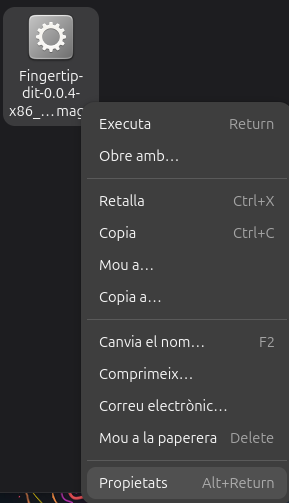
1 Download the AppImage and open its Properties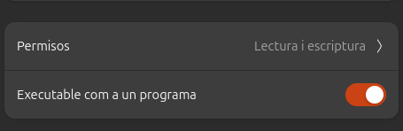
2 Tick “Allow executing file as program”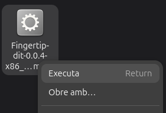
3 Run the AppImage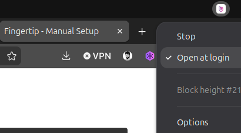
4 Click the Fingertip icon in the top bar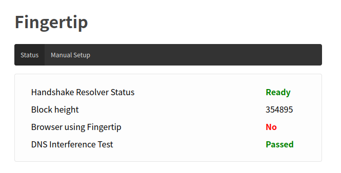
5 Firefox opens and Fingertip starts syncing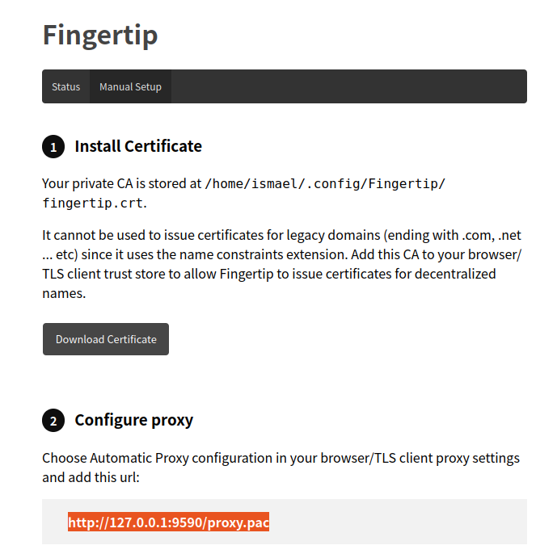
6 Download the certificate and copy the proxy address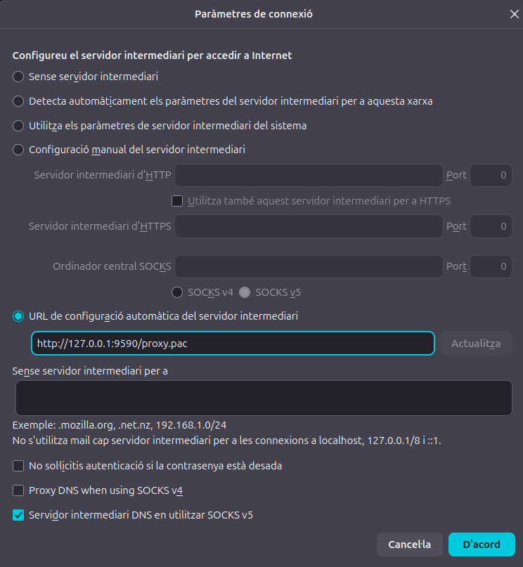
7 Paste the address into Firefox's proxy settings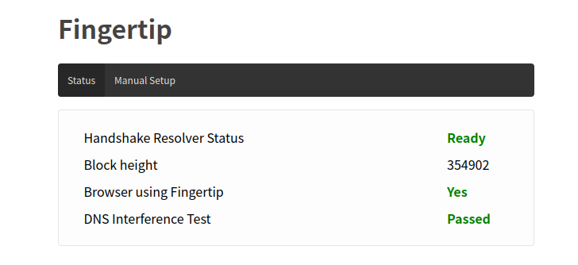
8 If everything worked, “Browser configuration” changes to Yes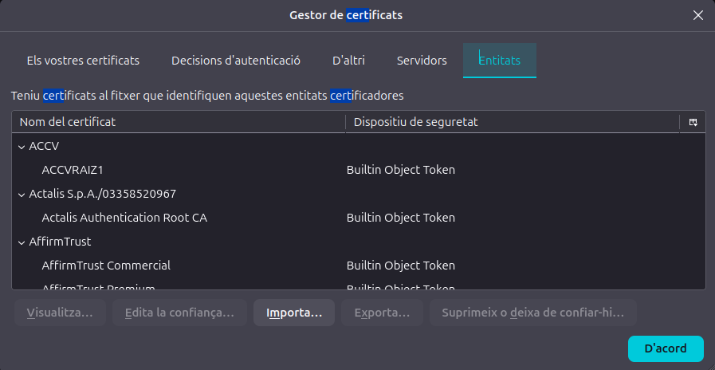
9 In Firefox's Certificate Manager, open the Authorities tab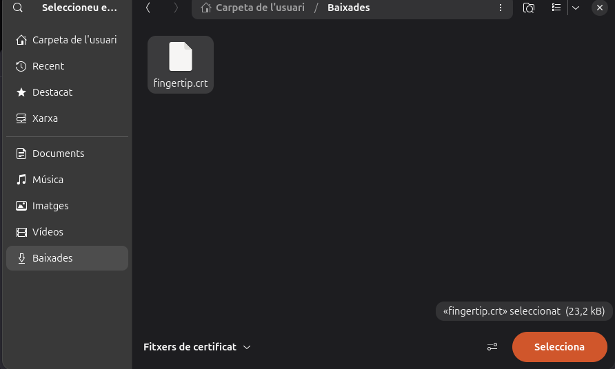
10 Import the certificate you just downloaded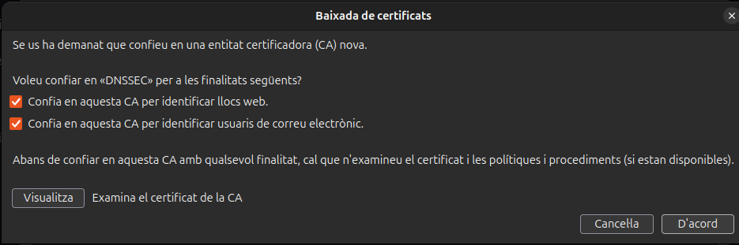
11 Trust it to identify websites (email is optional)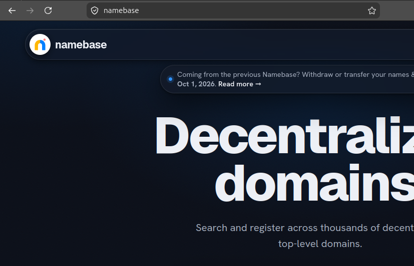
12 Visit a Handshake site, e.g. https://namebase/Is your issue not covered by any of the ones below? Feel free to send me an email or summon/DM me on Discord (@galetaire).
Certificates have a limited lifespan, so they eventually expire. To fix this, delete the old certificate manually and then reinstall Fingertip. Once it’s deleted, you’re ready to reinstall. On Windows, the certificate is stored in C:\Users\YOURUSER\AppData\Roaming\Fingertip.
Unlike Firefox, browsers such as Chrome and Brave use your operating system's proxy settings (Windows, macOS or Linux), so you must add the proxy to your OS. If your browser resolves sites after this fix but the address bar says it isn’t secure, it’s because you haven’t added the Fingertip certificate (DNSSEC) to your Trusted Root Certification Authorities. You can usually add it either to your operating system or to the browser only.
For Linux to start Fingertip at login, the AppImage needs to stay in a permanent location. If it's somewhere temporary, Linux won't find it, so Fingertip won't run at startup. Save the AppImage in a folder such as ~/Applications or ~/Documents, not in Downloads.
If you already installed from a temporary folder, go to ~/.config/autostart/ and edit the Exec= line in the fingertip.desktop file so it points to the new location.
[Desktop Entry]
Type=Application
Name=Fingertip
Exec=/home/YOURUSER/Documents/Fingertip.AppImage
X-GNOME-Autostart-enabled=true
X-GNOME-Autostart-Delay=5If you ever want to fully uninstall Fingertip-dit, cleaning all files from your system, there's a step-by-step guide, both for Windows and Linux, in the project's README.